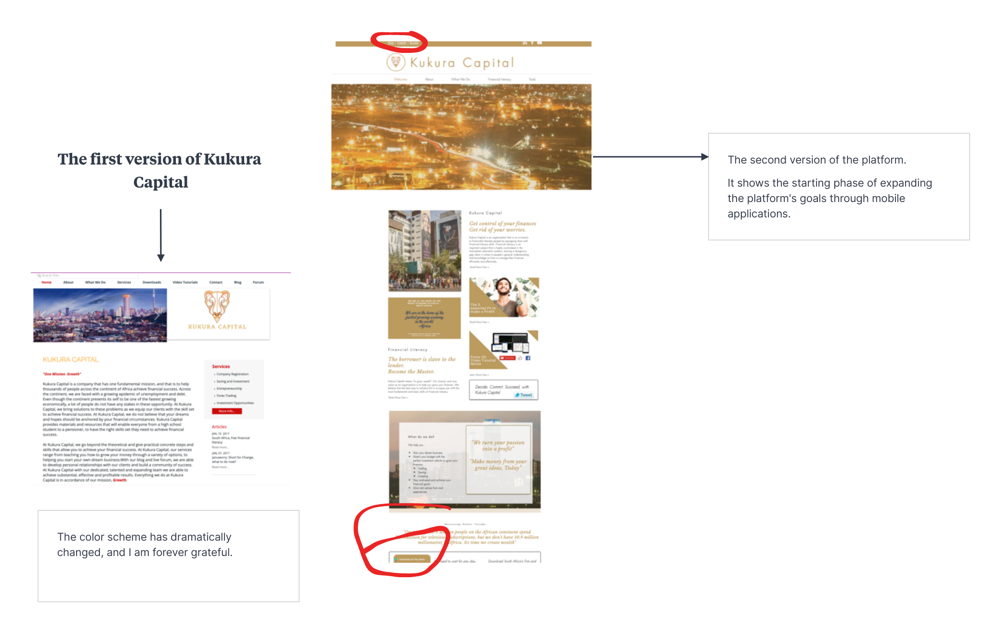

Title: Astute, Financially Astute
Role: UX Researcher, UI Designer, Product Manager, Software Engineer, Copy
Writer and Social Entrepreneur.
Timeline: 27 December 2021 to 04 February 2022
Rebranding: Kukura Capital to Astute
Kukura Capital has achieved modest success as a social enterprise that is
designed to further financial inclusion through financial education. Kukura
Capital started off as a personal finance blog, but has since involved into on
of the top financial technology companies in South Africa to watch.
Astute the new name and brand for Kukura Capital is developing on the ideas,
experience, and community that has been developed by Kukura Capital through
aggressive integration of technology solutions that achieve the goals that
Kukura Capital set out.
The full UX Case study, along with UI design and the plan of action for the
product development will be uploaded on this website by 19 February 2022.
Priori to the commencement of my legal training Kukura Capital underwent the
following developments:

Some of the mobile application ideas that I have been playing around with,
in order to expand and explore on previous Kukura Capital apps.


Financial Education and Financial Technology
Astute doubles down on the financial technology product range that Kukura
Capital initially explored, which centres around the financial education
through financial technology. In 2018, I published an app to this effect
called “” onto the App Store, which was a learning app that taught financial
literacy.
As excited I was to have fully finished the product, and it was on trend
with many of the financial, and general education technology products on the
market, I felt that the product could be more competitive in motivating
people in developing their personal finances.
With a profound interest in machine learning and artificial intelligence at
the time, I decided to evolve the initial mobile application and develop it
into a chatbot which was embed in a mobile application. I used dialog flow
to manage the chatbot backend, and built the UI with flutter. I curated the
chatbot content myself by using the copy writer experience I developed
running the blog.
From 2020 to 2022 I had to complete my legal training, and as a result
pulled all my apps from the public domain as I did not want the reputation
of my products the quality of my products to be compromised due my two year
abeyance from Kukura Capital.
Artificial intelligence, APIs and Blockchain
Even though my product development in the public domain paused due to me
undergoing my legal training, I still continued to up skill and further
expand on my skill set. Due to strict statutory requirements that prohibit
candidate legal practitioners from engaging in other activities or business
during their legal training, I could not do market testing through public
releases of my digital products. However, I believe the 2 years abeyance
from Kukura Capital has been exceptionally beneficial given that the fintech
space in this time exponentially evolved, and I was given time to experiment
with these technologies and explore even more creative innovative solutions.
Doing this has allowed me to develop Kukura Capital’s mission in ways that I
could not have ever imagined. Further details in this regard are provided in
full, in the completed case study for Astute, which will be available on
this website from 21 February 2022.